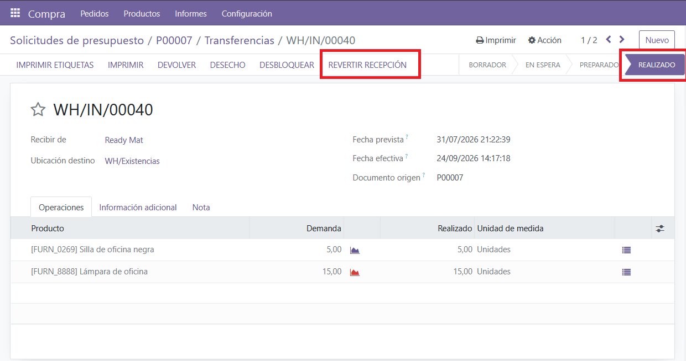
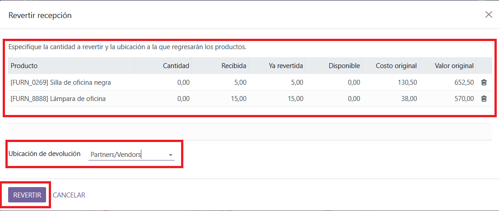
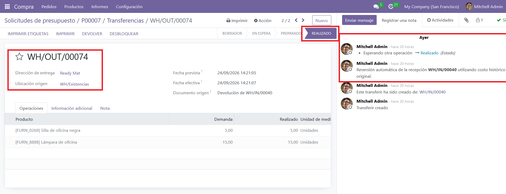
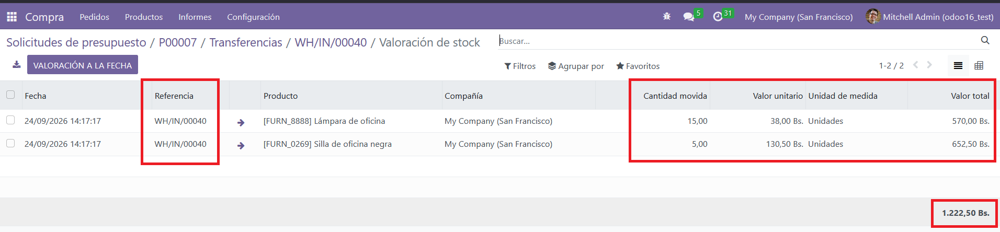
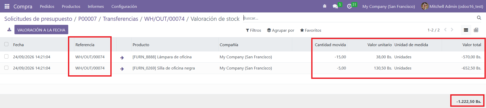
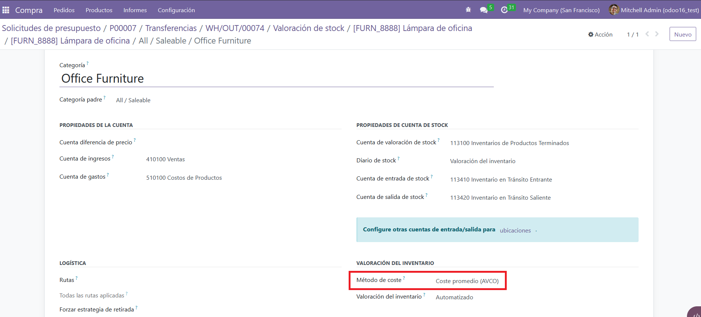

Odoo Inventory · Accurate Stock Valuation
Reverse Purchase Receipts at the
Original Valuation Cost.
Purchase Return at Original Cost lets you reverse a validated purchase
receipt using the historical unit cost at which the products were received,
instead of the current Average Cost (AVCO). Keep your inventory valuation
accurate and avoid discrepancies in your accounting entries.
✓
Odoo Community v16
✓
Odoo Enterprise v16
Compatible with Odoo.sh and dedicated servers — Odoo Online does not support custom modules.
🔁
Reversal at Original Cost
The return uses the historical unit cost from the original receipt
(from the Stock Valuation Layer), not the current AVCO.
🧭
Native Return Wizard
Reuses the standard Odoo return wizard for a familiar user experience,
so your team doesn't need to learn a new flow.
📊
Extra Columns in the Wizard
The wizard shows Received, Already Reverted,
Available, Original Cost and Original Value
for each line.
🔗
Native Accounting Flow
Works seamlessly with Odoo's standard inventory and accounting flows,
so your valuation and journal entries stay consistent.
Screenshots

Button "Revertir Recepción" available on validated purchase receipts.

Return wizard showing the original cost columns.

Return wizard with the received, reverted, and available quantities.

Stock Valuation Layer showing the original input cost.

Stock Valuation Layer showing the output reversal at the original cost.

Stock Valuation AVCO the output reversal at the original cost.
How It Works in 4 Simple Steps
1
Open a Validated Purchase Receipt
Go to Inventory > Operations > Receipts and open a receipt that
has already been validated (state = Done).
2
Click "Revertir Recepción"
The module adds the button to the header of the receipt, next to the
standard "Devolver" action. Both coexist peacefully.
3
Specify Quantities and Destination Location
In the wizard, set the quantities to return and the destination location.
The wizard shows extra columns (Received, Already Reverted, Available,
Original Cost, Original Value) to help you decide.
4
Click "Revertir" and Validate
The return is created, reserved, and validated automatically. The Stock
Valuation Layer is created at the original unit cost from the receipt,
not at the current AVCO.
Note: The wizard will show additional columns (Received, Already Reverted,
Available, Original Cost, Original Value) to help you decide the quantities to return.
Frequently Asked Questions
How is the original cost calculated?
The module reads the Stock Valuation Layer of the original receipt move
and computes the unit cost as value / quantity. That unit cost is
stored on the return move and used when creating the outgoing SVL.
Does it work with FIFO or Standard cost?
The module is primarily designed for Average Cost (AVCO). For FIFO it
will also produce a consistent reversal using the original receipt cost, but
it does not try to reverse layer-by-layer.
Can I revert only part of the receipt?
Yes. The wizard shows the received, already reverted, and available quantities
per line, and it validates that the requested quantity does not exceed what is
still available.
Does it affect the standard "Return" button?
No. The native "Devolver" button keeps its own standard wizard and
standard valuation. Our module adds a separate button with its own
wizard and its own valuation logic.
Do I need technical skills to install it?
No. Installation is the same as any other Odoo module. Once installed, the
flow is the standard Odoo return experience with an extra button on the
receipt.
Is support included?
Yes. We provide
technical support to help you with installation,
configuration, and any questions you may have. Contact us at
nav.rod.alvarez@gmail.com.